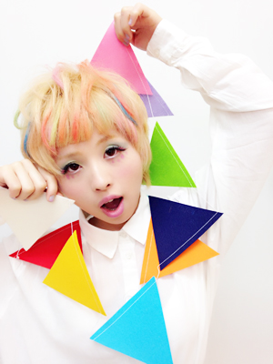

TSUBACHA
クリエイター&デザイナー
（Graphic／Accesories/Fashion／Web／DTP)
出身：大阪
現在：東京
使用ソフト
Photoshop,Illustrator,Dreamweaver
123desgin(3DCAD),
Colel Draw
お仕事の依頼は
info@tsubacha.comまでお願いします。
職務経歴/活動履歴
2013/5 TSUBACHAとして作家活動開始
2013/5 Bibide Market 委託販売開始
2014/5 中崎町tenten 委託販売開始
2014/4 ファッション専門学校（4年制)卒業
2015/4 子供服企業 デザイナーとして就職
2015/5 ユーズド☆オッさんLINE STAMP販売開始
2015/2 セレクトショップDOG系列委託販売開始
2015/8 子供服企業退職
2015/8 never mind the XU 委託販売開始
2015/10 ヴィレッジバンガード委託販売開始
委託先:DOG OSAKA,ASOVIVA,DOG KYOTO,never mind the XU,tenten,ヴィレッジバンガード
20代をターゲットとした服、アクセサリーを製作販売。
ストリート/ユニセックスブランドTSUBACHA、カラフルポップ/レディースブランドTSUBACHA POP♡BERRYの２つのブランドを設立運営。